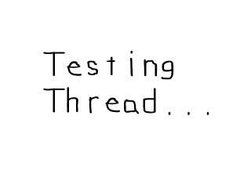

Multithreading

Last Updated 11/22/12
Up until now you've been making programs that only do one process at a time. With multithreading, you can make programs that can do multiple processes at once. This tutorial will introduce you to SDL's cross platform multithreading capabilities.Multithreading tutorial with SDL 2 is now available.
#include "SDL/SDL.h"
#include "SDL/SDL_image.h"
#include "SDL/SDL_thread.h"
#include <string>
First off we have to remember to include the header for SDL threads.
*nix user may have to include X11:
*nix user may have to include X11:
#include "X11/Xlib.h"
You'll also have to call XInitThreads() in your initialization function and link with -lX11//The thread that will be used
SDL_Thread *thread = NULL;
//Quit flag
bool quit = false;
Here are two important global variables.
First we have the SDL_Thread which is going to be the thread we are going to run. Then we have our "quit" variable, which we usually have as a local variable in main() but this time we need it to be global.
First we have the SDL_Thread which is going to be the thread we are going to run. Then we have our "quit" variable, which we usually have as a local variable in main() but this time we need it to be global.
int my_thread( void *data )
{
//While the program is not over
while( quit == false )
{
//Do the caption animation
SDL_WM_SetCaption( "Thread is running", NULL );
SDL_Delay( 250 );
SDL_WM_SetCaption( "Thread is running.", NULL );
SDL_Delay( 250 );
SDL_WM_SetCaption( "Thread is running..", NULL );
SDL_Delay( 250 );
SDL_WM_SetCaption( "Thread is running...", NULL );
SDL_Delay( 250 );
}
return 0;
}
Here's the function that's going to be our thread.
All it does is put a different caption every quarter of a second while the user has not quit.
Now you see why the "quit" variable needed to be global.
In order for a function to be used as a thread in SDL it has to meet 2 requirements. First off it must return an int. Secondly it must have the argument that is a pointer to a data type of void. If the function does not meet both of these requirements it cannot be used as a thread.
In order for a function to be used as a thread in SDL it has to meet 2 requirements. First off it must return an int. Secondly it must have the argument that is a pointer to a data type of void. If the function does not meet both of these requirements it cannot be used as a thread.
//Create and run the thread
thread = SDL_CreateThread( my_thread, NULL );
In the main function after everything is initialized and loaded, we call SDL_CreateThread().
SDL_CreateThread() takes in the function in the first argument, turns it into a thread and then runs the newly made thread. It returns a pointer to the thread so we can keep track of it.
SDL_CreateThread() takes in the function in the first argument, turns it into a thread and then runs the newly made thread. It returns a pointer to the thread so we can keep track of it.
//Apply the image to the screen
apply_surface( 0, 0, image, screen );
//Update the screen
if( SDL_Flip( screen ) == -1 )
{
return 1;
}
//While the user hasn't quit
while( quit == false )
{
//While there's events to handle
while( SDL_PollEvent( &event ) )
{
//If the user has Xed out the window
if( event.type == SDL_QUIT )
{
//Quit the program
quit = true;
}
}
}
Then we show the image on the screen, then wait for the user to quit.
While this is going on, the caption is changing in our thread that is currently running parallel to what we're doing. Thanks to SDL's multithreading capabilities, you're able to do these two things simultaneously.
While this is going on, the caption is changing in our thread that is currently running parallel to what we're doing. Thanks to SDL's multithreading capabilities, you're able to do these two things simultaneously.
void clean_up()
{
//Stop the thread
SDL_KillThread( thread );
//Free the surface
SDL_FreeSurface( image );
//Quit SDL
SDL_Quit();
}
Here's our clean up function.
First we call SDL_KillThread() which instantly stops the thread. Typically you should wait for the thread to finish, but in this case it won't do any harm to just stop it. Then we free the surface, and quit SDL.
First we call SDL_KillThread() which instantly stops the thread. Typically you should wait for the thread to finish, but in this case it won't do any harm to just stop it. Then we free the surface, and quit SDL.
When it comes to using multithreading in games, the general rule is "Don't".
There's so much more you have to deal with than in single threaded programs.
With the rise of multicore CPUs, it's tempting to jump right in.
However there are cases where multithreading can be useful in game. If you're new to game programming, don't use it until you're more experienced. Multithreading can be more of a headache than it's worth. You have to know thread synchronization (which the next two tutorials teach), and how to deal with concurrency. Only when you have a good handle on software architecture should you use this powerful tool.
However there are cases where multithreading can be useful in game. If you're new to game programming, don't use it until you're more experienced. Multithreading can be more of a headache than it's worth. You have to know thread synchronization (which the next two tutorials teach), and how to deal with concurrency. Only when you have a good handle on software architecture should you use this powerful tool.